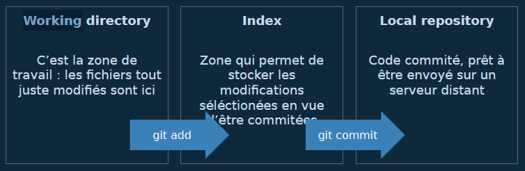
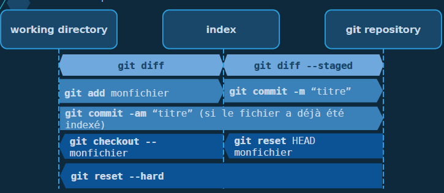
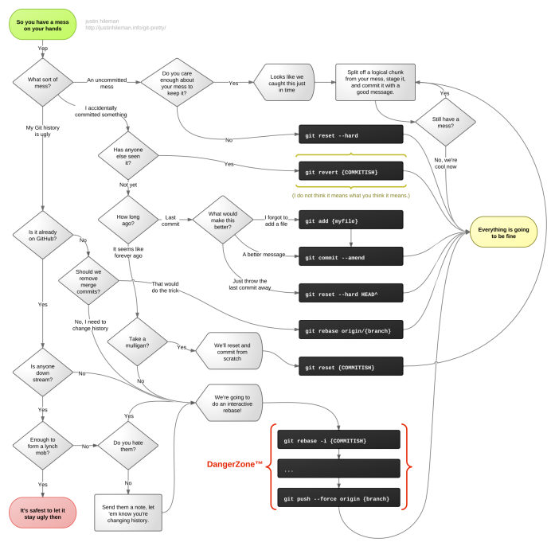
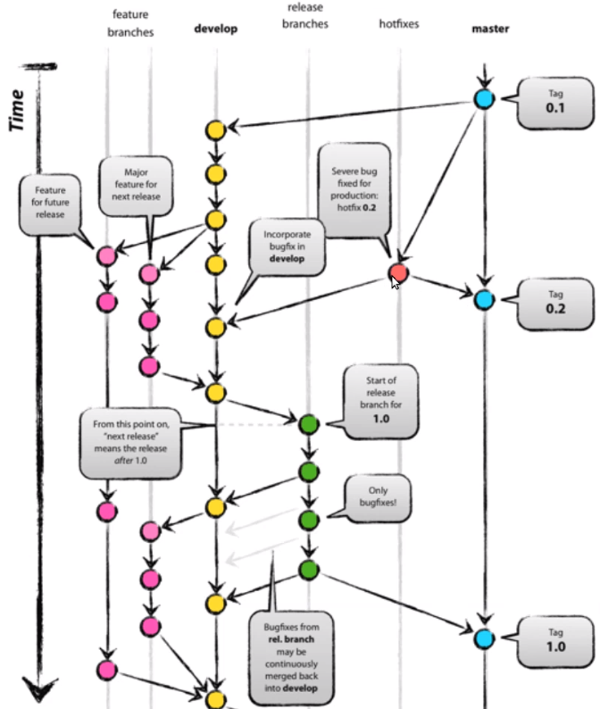

2021-06-17
Animée par Bruno GUERIN de DAWAN Toulouse, 14H du 17/06/21 au 18/06/21. (bguerin@dawan.fr) Formateur Dawan (Linux, réseau et bases de données)
Pour le lulz: Gource est un outil de visualisation du déroulement d’un projet et des commits réalisés.
Git Cheatsheet: http://ndpsoftware.com/git-cheatsheet.html#loc=workspace
Learn Git in 15 Minutes: https://www.youtube.com/watch?v=USjZcfj8yxE
Getting Git Right: https://www.atlassian.com/fr/git
apt install git gpg
# gpg: outil de chiffrage pour les transferts sécurisésstagiaire@debian:~/Scripts/GitRepos$ git --help
usage : git [--version] [--help] [-C <chemin>] [-c <nom>=<valeur>]
[--exec-path[=<chemin>]] [--html-path] [--man-path] [--info-path]
[-p | --paginate | -P | --no-pager] [--no-replace-objects] [--bare]
[--git-dir=<chemin>] [--work-tree=<chemin>] [--namespace=<nom>]
<commande> [<args>]
Ci-dessous les commandes Git habituelles dans diverses situations :
démarrer une zone de travail (voir aussi : git help tutorial)
clone Cloner un dépôt dans un nouveau répertoire
init Créer un dépôt Git vide ou réinitialiser un existant
travailler sur la modification actuelle (voir aussi : git help revisions)
add Ajouter le contenu de fichiers dans l'index
mv Déplacer ou renommer un fichier, un répertoire, ou un lien symbolique
reset Réinitialiser la HEAD courante à l'état spécifié
rm Supprimer des fichiers de la copie de travail et de l'index
examiner l'historique et l'état (voir aussi : git help revisions)
bisect Trouver par recherche binaire la modification qui a introduit un bogue
grep Afficher les lignes correspondant à un motif
log Afficher l'historique des validations
show Afficher différents types d'objets
status Afficher l'état de la copie de travail
agrandir, marquer et modifier votre historique
branch Lister, créer ou supprimer des branches
checkout Basculer de branche ou restaurer la copie de travail
commit Enregistrer les modifications dans le dépôt
diff Afficher les changements entre les validations, entre validation et copie de travail, etc
merge Fusionner deux ou plusieurs historiques de développement ensemble
rebase Réapplication des commits sur le sommet de l'autre base
tag Créer, lister, supprimer ou vérifier un objet d'étiquette signé avec GPG
collaborer (voir aussi : git help workflows)
fetch Télécharger les objets et références depuis un autre dépôt
pull Rapatrier et intégrer un autre dépôt ou une branche locale
push Mettre à jour les références distantes ainsi que les objets associés
'git help -a' et 'git help -g' listent les sous-commandes disponibles et
quelques concepts. Voir 'git help <commande>' ou 'git help <concept>'
pour en lire plus à propos d'une commande spécifique ou d'un concept.git reset: récupère tous les fichiers d’un (seul) commitgit checkout: permet de récupérer un seul fichier d’un commitCheatsheet (Interactive):
Cheatsheet (PDF):
Git Cheatsheet (pic):
Working Directory: C’est la zone de travail. Les fichiers tout juste modifiés sont ici.
Index: Zone qui permet de stocker les modifications séléctionnées en vue d’être commitées.
Local Repository: Code commité, prêt à être envoyé sur un serveur distant.

Flow détaillé:

Lors du début d’un projet Git, il faut suivre les étapes suivantes:
git initgit add .git commit -m "Commit Initial".gitignore
dossier_a_ignorer/

Pour plus de détails, consulter: https://git-scm.com/book/fr/v2/Les-branches-avec-Git-Branches-et-fusions%C2%A0%3A-les-bases
Changer de branch: git checkout -b branch_name
stagiaire@debian:~/Scripts/GitRepos/labo$ git branch
* dev-dd
main
stagiaire@debian:~/Scripts/GitRepos/labo$ git branch -a
* dev-dd
main
remotes/origin/HEAD -> origin/main
remotes/origin/akim
remotes/origin/br
remotes/origin/branch-loubna
remotes/origin/chafea
remotes/origin/charles
remotes/origin/dev-alicia
remotes/origin/dev-bob
remotes/origin/dev-dd
remotes/origin/main
remotes/origin/margaux
remotes/origin/ouardia.br
stagiaire@debian:~/Scripts/GitRepos/labo$ git merge
dev-dd origin/akim origin/dev-alicia origin/margaux
FETCH_HEAD origin/br origin/dev-bob origin/ouardia.br
HEAD origin/branch-loubna origin/dev-dd
main origin/chafea origin/HEAD
ORIG_HEAD origin/charles origin/main
stagiaire@debian:~/Scripts/GitRepos/labo$ git merge origin/dev-alicia origin/dev-dd
Merge made by the 'recursive' strategy.
DD.sh | 6 ++++--
1 file changed, 4 insertions(+), 2 deletions(-)
stagiaire@debian:~/Scripts/GitRepos/labo$ vi DD.sh
stagiaire@debian:~/Scripts/GitRepos/labo$ ll
total 104K
1044510 drwxr-x--- 3 stagiaire stagiaire 4,0K juin 18 12:29 ./
1044561 drwxr-x--- 3 stagiaire stagiaire 4,0K juin 18 10:44 ../
1044663 -rw-r----- 1 stagiaire stagiaire 6 juin 18 10:42 akim
1044664 -rw-r----- 1 stagiaire stagiaire 94 juin 18 11:55 data.txt
1044658 -rwxr-x--- 1 stagiaire stagiaire 88 juin 18 12:29 DD.sh*
1044665 -rw-r----- 1 stagiaire stagiaire 45 juin 18 11:55 fichier.ch
1044511 drwxr-x--- 8 stagiaire stagiaire 4,0K juin 18 12:28 .git/
1044666 -rw-r----- 1 stagiaire stagiaire 26 juin 18 10:42 job.sh
1044768 -rw-r----- 1 stagiaire stagiaire 60K juin 18 11:55 linux.md
1044767 -rw-r----- 1 stagiaire stagiaire 8 juin 18 11:55 Margaux
1044769 -rw-r----- 1 stagiaire stagiaire 13 juin 18 11:55 ouardia
1044662 -rw-r----- 1 stagiaire stagiaire 36 juin 18 11:55 README.mdVoir https://docs.github.com/en/github/authenticating-to-github/connecting-to-github-with-ssh
stagiaire@debian:~$ ssh-keygen -t ed25519
Generating public/private ed25519 key pair.
Enter file in which to save the key (/home/stagiaire/.ssh/id_ed25519): github_ed25519
Enter passphrase (empty for no passphrase):
Enter same passphrase again:
Your identification has been saved in github_ed25519.
Your public key has been saved in github_ed25519.pub.
The key fingerprint is:
SHA256:KFs7NciyVgGcubmQbBe7Y2+l0SPC3vuQfC7Km22DQ/c stagiaire@debian
The key's randomart image is:
+--[ED25519 256]--+
| ..o |
| =. |
| . . =. |
| = =. + |
| . +oo*.S |
| OO+++. |
| ++B**.. |
| o+oO=E |
| =*o=o |
+----[SHA256]-----+stagiaire@debian:~$ ll sshkeys/
total 168K
1044679 drwxr-x--- 2 stagiaire stagiaire 4,0K juin 18 16:29 ./
1044500 drwxr-xr-x 9 stagiaire stagiaire 156K juin 18 16:29 ../
1044869 -rw------- 1 stagiaire stagiaire 464 juin 18 16:27 github_ed25519
1044871 -rw-r----- 1 stagiaire stagiaire 98 juin 18 16:27 github_ed25519.pub
Puis on créé un fichier config dans ~/.shh qui contient le chemin de la clé:
Host github.com
IdentityFile ~/sshkeys/github_ed25519Puis dans GitHub, voir: https://docs.github.com/en/github/authenticating-to-github/connecting-to-github-with-ssh/adding-a-new-ssh-key-to-your-github-account